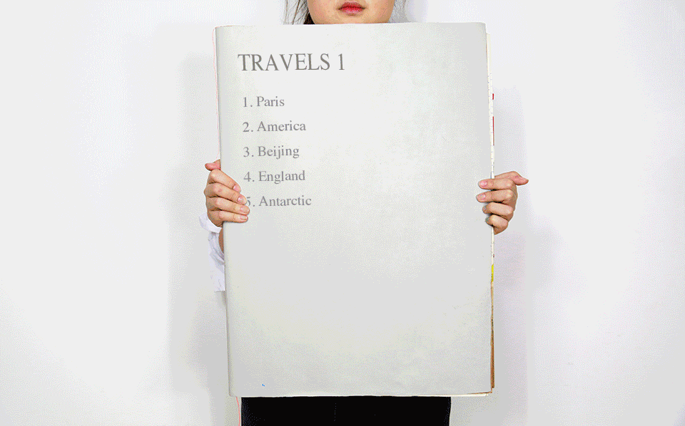
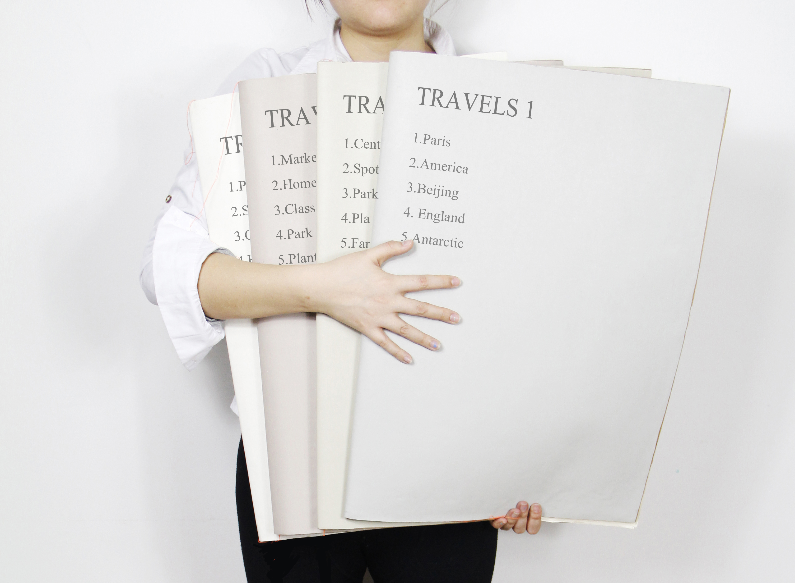

//// I Read Everything I Had With My Way ////




* handmade books design
* keywords: read fantasy handmade second-hand books
* 2015
* books: 410mm × 560mm × 4
This project is my graduation project. This year the "Second-Hand Books" is the theme of our studio so that I use the second-hand books to start my creation.
I use lots of materials to complete this project because I think every second-hand book has there own story and it cannot be limited by just the paper. And these materials make my project more unique. The sequence of the adhesive tape is the order of the readers. The yellow one is the mainline which represents the shift of the location and the green one is subline which means the development of the stories.
I make all the second-hand books I have collected scatter then re-edit it, collage all the pieces. As a result, these pieces form 4 fragmentation dramas and each of the drama have 5 episode. Switching between the acts are due to the switch of the location. Each scene are in different locations occurred different stories. Finally, it forms like 4 travels notes. All the stories are from my imagination.
- Created By Cherrie Jiang -
- 09 / 2016 -